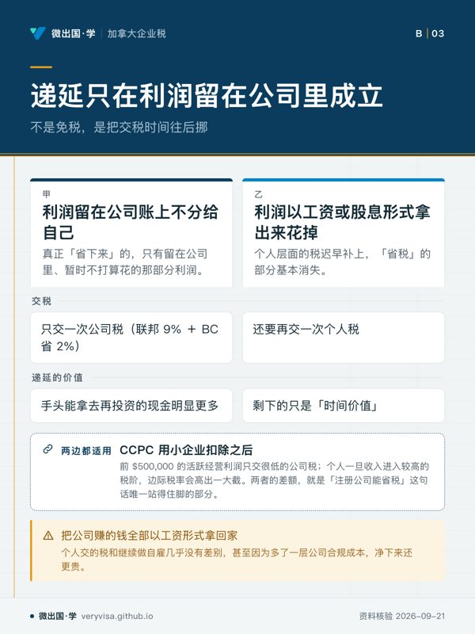
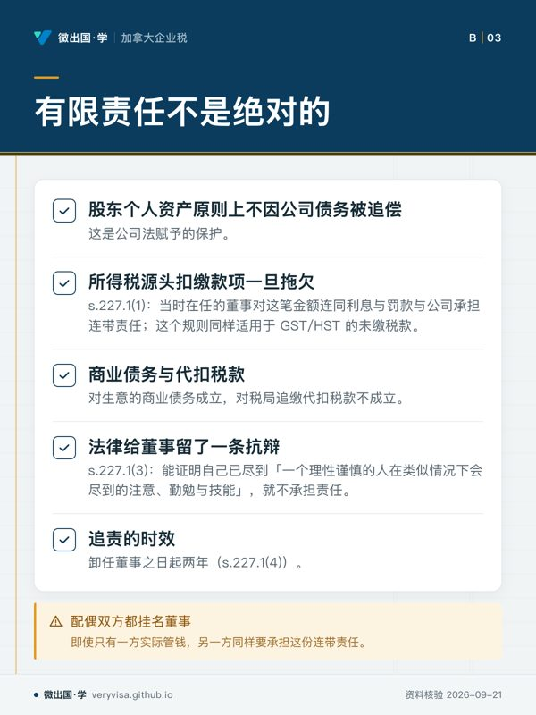

🃏 Flashcards · 3 闪卡 · 3 张 🖼 Slides · 3 幻灯 · 3 页 ✍️ Questions · 7 刷题 · 7 道
自雇与小生意 Self-employment and small business P2 稳住 P2 Hold steady
ZH EN ZH + EN
先看这一章怎么考 First, how this chapter is tested
概念辨析题：给你一位自雇者把当年全部利润以工资或股息取回家花掉的场景，考你能否区分税务递延（tax deferral）与真正省税——只有留在公司里不分配的利润才享受11%低税率带来的递延价值，全部花掉时由于税收整合原理（principle of integration）加合规成本，注册反而倒贴。 Concept distinction questions: a self-employed person takes home all the year's profit as salary or dividends and spends it, and you must tell tax deferral from genuine tax savings; only profit left undistributed in the company enjoys the deferral value of the 11% low rate, and when it is all spent, the principle of integration plus compliance costs mean that incorporating actually loses money. 税率与门槛计算题：对比2026税年BC省个人最高边际税率53.5%与CCPC小企业综合税率11%（差额42.5个百分点）、一般公司综合税率27%，以及被动收入递减（passive income grind，$50,000起、$150,000归零）和应税资本递减（$10M至$50M）对$500,000业务限额（business limit）的影响。 Rate and threshold calculation questions: compare the 2026 tax-year BC top personal marginal rate of 53.5% with the CCPC small business combined rate of 11% (a gap of 42.5 percentage points) and the general corporate combined rate of 27%, and the effect on the $500,000 business limit of the passive income grind (starting at $50,000, reaching zero at $150,000) and the taxable capital grind ($10M to $50M). 个人服务业务（PSB）判定与税率题：描述一位只服务单一客户、像挂名雇员的独立顾问注册公司后的税务后果，考你PSB综合税率45%的构成（联邦基本28%无一般税率减免＋PSB附加税5%＋BC一般税率12%）、费用扣除受限规则，以及「全年雇有超过5名全职员工」或「为关联公司提供服务」两条法定豁免。 Personal services business (PSB) determination and rate questions: describing the tax consequences after an independent consultant who serves only one client, like a disguised employee, incorporates; you must know the composition of the PSB combined rate of 45% (federal base 28% with no general rate reduction + PSB additional tax 5% + BC general rate 12%), the restricted expense deductions, and the two statutory exemptions: "more than five full-time employees throughout the year" or "providing services to an associated corporation". 最常丢分的陷阱（看到题干信号就警觉） Traps that cost the most marks (watch for the signal in the stem)
混淆「税务递延」与「永久免税」 Confusing tax deferral with permanent tax exemption 题干出现「全部取出用于家庭日常开销」「年底公司账上不留存利润」或「年利润较低（如$58,000）且全部花完」。 The stem has "all taken out for everyday family spending", "no profit left on the company's books at year end" or "low annual profit (such as $58,000) that is all spent". 把「单一客户」绝对等同于个人服务业务（PSB） Treating "single client" as absolutely equal to a personal services business (PSB) 题干虽然写「全年只服务一家客户」，但同时提到「公司全职雇有6名（或超过5名）程序员/员工」或「客户为关联公司」。 The stem says "serves only one client all year" but also mentions that "the company employs 6 (or more than 5) full-time programmers/employees throughout the year" or that "the client is an associated corporation". 误以为独资出售资产也能用终身资本利得豁免（LCGE） Thinking a sole proprietor selling assets can also use the lifetime capital gains exemption (LCGE) 题干写的是「sole proprietor selling business assets / goodwill（个体户出售生意资产或商誉）」而非「selling shares of a QSBCS（出售合格小企业公司股份）」。 The stem says "sole proprietor selling business assets / goodwill" rather than "selling shares of a QSBCS". 本章考点页：导图、要点表、7 道带逐项解析的练习 →
核实日期：2026-09-05｜现行口径：2026 税年（2027 年春申报） ｜复核：2027-01-31（本页含 2026-01-01 起指数化的终身资本利得豁免额，是本页变动最快的一格）。
法条依据指向《所得税法》(Income Tax Act, ITA) 现行合订本（Act current to 2026-06-21）；数值指向加拿大税务局 (Canada Revenue Agency, CRA)、Corporations Canada 与卑诗省 (British Columbia, BC) 官方现行页面。GST/HST 注册与费率见 ca-business-03-gst-hst-registration-quick-method（另篇）；把已有生意的资产转进新公司的具体机制见 ca-corporate-04-shareholder-loans-s85-abil-windup（另篇）；注册之后怎么从公司拿钱、工资还是股息，见 ca-corporate-03-salary-vs-dividend（另篇）；公司本身怎么报 T2、小企业扣除怎么算，见 ca-corporate-01-t2-intro-sbd（另篇）。本页只回答前面那一步：要不要把生意从 T2125 挪进一家公司 。
自雇生意做到一定规模，几乎每个人都会被问到同一句话：「你怎么还没注册公司，注册了不是能省很多税吗？」这一页帮你分清「递延」与「省税」是两件不同的事（前者几乎总成立，后者往往不成立），算出在自己现在的收入水平上把利润留在公司里能拿到多大的税率差，并认出「不该注册」的典型情形——其中个人服务业务不但拿不到好处，反而会被课以公司里最高的税率。
一、制度设计与底层逻辑：注册这件事，税法只关心一件事 本节回答 This section answers 税收整合原理如何运作，以及为什么只有留存利润才有递延价值 How the principle of integration works, and why only retained profit has deferral value 本章考题 1 Question 1
1.1 一个商业选择，两套完全不同的算税方式
自雇（sole proprietorship）在税法上不存在「生意」与「你」的界限：T2125 表算出来的净利润，直接并进你自己那张 T1 的总收入，和你的工资、投资收入合在一起，按同一套累进税阶交税，赚一块钱就按你当时那一档的边际税率交一块钱对应的税。公司则是另一个纳税人——利润先在公司账上按公司税率交一遍税，你自己要等到真正把钱以工资或股息的形式拿出来那一天，才在个人层面再交一遍税。这不是「公司税率更低所以更省」这么简单的一句话 ，而是把「赚钱」与「交税」这两个时间点，在公司形式下彻底拆开了。这一拆，就是这一页要讲的全部内容的起点。
1.2 整合原理：政府设计这套双层结构的初衷是「税负相同」，不是「便宜公司」
《所得税法》背后有一条不成文但贯穿全部公司税规则的设计目标，业内称为税收整合原理 (principle of integration) ：不管你是直接以个人身份赚钱，还是先通过一家公司赚钱再把利润分给自己，最后落到你个人手上的总税负，理论上应当大致相同——政府不希望「要不要注册公司」这个商业决定，被税负差异牵着走，只应该由责任保护、融资、传承这类真正的商业理由决定。
整合靠两个机制配合实现：公司交完税后把股息发给你，你在个人报表上先把这笔股息按比例毛额化 (gross-up) ，模拟出公司分红前那笔税前利润的大小，再用股息税收抵免 (dividend tax credit, DTC) 把公司已经交过的那部分税抵掉（《所得税法》s.82(1)(b) 与 s.121，加拿大联邦法规库（1 、2 ））。合资格股息与非合资格股息的毛额化比例和抵免率不同，对应的正是公司当初按 15% 一般税率还是 9% 小企业税率交的税——税率越高，允许抵免的比例也越大 ，这就是整合机制在数学上想做到的事。
但整合从来不是完美的。 现实中总有一个跨阶层的税负差异，正是这个差异，构成了下一节要讲的「递延」。
1.3 递延的本质：不是免税，是把交税时间往后挪，而且只有钱留在公司里才成立
图：自雇还是公司——核心差别在赚钱与交税的时间点
加拿大受控私人公司 (Canadian-controlled private corporation, CCPC) 用小企业扣除 (small business deduction, SBD) 之后，前 $500,000 的活跃经营利润只交很低的公司税；而你个人一旦收入进入较高的税阶，边际税率会高出一大截。两者的差额，就是媒体口中「注册公司能省税」这句话唯一站得住脚的部分——但它省下来的，严格说不是税款，是把交税的时间点往后推 ：
利润留在公司账上不分给自己：只交一次公司税（联邦 9% ＋ BC 省 2%）。
利润以工资或股息形式拿出来花掉：还要再交一次个人税，整合机制会把公司已交的那部分抵掉一大半，但不是全部。
真正「省下来」的，只有留在公司里、暂时不打算花的那部分利润 ——这笔钱因为当年只按低得多的公司税率交了税，比你直接以个人身份赚同样一笔钱、当年就要按个人边际税率交税，手头能拿去再投资的现金明显更多。这个差额一年一年地滚下去，才是真正的价值所在；一旦这笔钱被取出来花掉，个人层面的税迟早补上，「省税」的部分基本消失，剩下的只是「时间价值」。教一个不准确的说法「注册公司能省很多税」，最容易让人忽略的正是这句话：递延只在利润留在公司里的那段时间里成立。
⚠️
「我注册了公司，是不是就不用交那么多税了」
不是。如果你每年把公司赚的钱全部以工资形式拿回家花掉，你个人交的税和你继续做自雇几乎没有差别，甚至因为多了一层公司合规成本（见第二节），净下来还更贵。递延的价值只在「利润留在公司里」的那部分年份里才存在。
1.4 谁与谁在博弈：政府防的是「把利润切碎、把身份切碎」
政府给低税率的前提，是这笔利润必须真的来自「活跃经营」而不是被人为包装出来的安排。围绕这个前提，规则设了三道防线：被动收入递减 （公司账上囤积过多投资收入会削减小企业扣除限额，$50,000 起、$150,000 归零）、分拆收入税 (tax on split income, TOSI) （防止把股息发给没有实际参与经营的家庭成员来分摊税阶）、以及本页要重点讲的个人服务业务 (personal services business, PSB) （防止把本该是雇佣关系的收入包装成公司利润来蹭低税率）。这三道防线的存在，本身就说明了一件事：「注册公司省税」从来不是无条件成立的默认结果，而是一套需要满足前提才生效的机制 ，前提不满足，规则会把你打回原形，甚至罚得比不注册还重。
1.5 报错的法律后果
被认定为不符合 CCPC 资格、误用小企业扣除限额、或被判定为个人服务业务而仍按低税率报税，CRA 可以重新评税，追缴少缴的公司税差额并按规定利率计收利息；蓄意或重大过失的错报还可能触发罚款。此外，公司一旦拖欠代扣税款或 GST/HST 未缴，董事个人 要承担连带责任（第二节详述）——这是「注册公司＝有限责任」这句话里最容易被忽略的例外。
节末检索小测 · 先别往回翻，凭记忆作答 Quick recall check: answer from memory before scrolling back
Under the Canadian Income Tax Act, what is the primary function of the dividend gross-up and dividend tax credit (DTC) mechanism when a corporation distributes after-tax profits to an individual shareholder?
在加拿大《所得税法》下，当公司将税后利润分配给个人股东时，股息毛额化（dividend gross-up）与股息税收抵免（DTC）机制的主要功能是什么？
a To permanently exempt corporate dividends from personal income tax so small businesses can reinvest more cash. ✗ 股息在个人层面并非免税（exempt），而是先还原为税前利润规模再抵减公司已交税款；把递延或整合误当成个人免税是典型概念陷阱。 Dividends are not exempt at the personal level; they are first restored to the pre-tax profit scale and then offset against the tax the company has already paid; treating deferral or integration as personal exemption is a typical conceptual trap.
b To achieve the principle of integration so total tax paid through a corporation roughly equals earning the income personally. ✓ 正确。税收整合原理（principle of integration）通过股息毛额化（gross-up）还原公司分红前的税前利润，再用股息税收抵免（dividend tax credit, DTC）抵掉公司已交税款，使直接个人赚钱与通过公司分红的总税负理论上大致相同。 Correct. The principle of integration restores the company's pre-tax profit before the dividend through the dividend gross-up, then offsets the tax the company already paid with the dividend tax credit (DTC), so that the total tax of earning directly as an individual and of earning through a company and paying dividends is in theory about the same.
c To penalize shareholders who withdraw dividends instead of paying themselves a regular T4 salary. ✗ 毛额化与股息税收抵免不是惩罚机制，而是为了消除公司层与个人层的双重全额征税，使工资与股息遵循整合设计。 The gross-up and the dividend tax credit are not penalty mechanisms; they exist to eliminate double full taxation at the corporate and personal levels so that salary and dividends follow the integration design.
d To reduce the corporation's passive income grind when investment income exceeds $50,000 in a tax year. ✗ 被动收入递减（passive income grind）是针对公司囤积超过$50,000投资收入时削减$500,000业务限额的防滥用规则，与股息毛额化和DTC的整合计算无关。 The passive income grind is an anti-abuse rule that cuts the $500,000 business limit when a company hoards more than $50,000 of investment income, and is unrelated to the integration calculation of dividend gross-up and DTC.
看答案与每个选项的解析 Show the answer and why each option is right or wrong 答案 Answer ：b
二、2026 税年现行规则与数字：这条税率差到底有多大 本节回答 This section answers 2026年个人与公司四档税率、PSB税率及董事连带责任 The four rates for individuals and companies in 2026, the PSB rate and director joint liability 本章考题 2 Question 2
2.1 三列表：个人最高边际税率 vs 公司综合税率，2024–2026 全部没有变化
下表把「递延」两个字换算成实际的百分比。它本身就是一个值得记住的结论 ：这四行数字在 2024、2025、2026 三个税年里一个百分点都没有变过——变的只是税阶的美元门槛，税率本身是长青值。
这张表怎么读。 联邦个人所得税最高一档税率 33% 与 BC 最高一档税率 20.5%，合并最高边际税率 53.5%（CRA 、BC 省政府（论坛解读） ）；联邦小企业税率 9% 与 BC 小企业税率 2%，合并 11%（CRA ）——两者相差 42.5 个百分点 ，这就是「递延」两个字在 2026 税年的真实分量：把一块钱利润留在符合条件的 CCPC 里，比留在一个已经进入最高税阶的个人手上，当年少交 42.5 分的税。但请注意，这条差额只对已经站在个人最高税阶、且真的打算把利润留在公司里再投资 的人才有意义；收入本就不高的自雇者，个人边际税率可能只有 20.5% 甚至更低，与 11% 的差距要小得多，注册的税务价值也小得多（见第六节案例二）。
第四行是本页要单独强调的一格。 网上流传的说法常把「个人服务业务被罚」的税率说得含糊，实际数字是可以算清楚的：联邦公司税基本税率 38%，扣除 10 个百分点的省份所得减让 (federal abatement) 后 28%（CRA ）；一般公司利润在此基础上还能再拿到 13 个百分点的一般税率减免 (general rate reduction, GRR) ，降到 15%，但《所得税法》s.123.4(1) 的「完全税率应税所得 (full rate taxable income)」定义里，明文把「公司当年来自个人服务业务的收入」从这项减免的适用范围里排除（加拿大联邦法规库 ）——PSB 收入失去这两项减免，而且 ITA s.123.5 另加 5% 的 PSB 税，联邦合计为 33%。加上 BC 一般公司税率 12%（BC 的低税率只适用于「有资格享受联邦小企业扣除的活跃经营收入」，PSB 收入被排除在外，因此适用一般税率，BC 省政府（论坛解读） ），BC 合并税率为 45%，比 11% 小企业综合税率高 34 个百分点，比 27% 一般公司综合税率高 18 个百分点 。这是对公司保留的 PSB 应税所得计算，工资扣除及股东提取的税务后果须另算。
✕
个人服务业务：注册公司里唯一「越注册越亏」的坑
一个人独立接一份长期合同、只服务一个客户、看起来更像是「挂在公司名下的雇员」而不是独立生意，就可能落进个人服务业务的定义：该个人（或其关系人）持有该公司的特定股份，且如果没有这家公司存在，这个人本来就该被认定为客户的雇员——除非公司全年雇有超过五名全职员工 ，或者服务对象是与自己关联的公司（CRA ）。落入这一类，不但拿不到 9% 的小企业税率，连一般税率减免也没有，能扣除的费用被压缩到只剩该员工的薪酬、相关福利与极少数销售或催收费用（CRA ；ITA s.18(1)(p)），公司保留下来的这部分利润在 BC 合计按 45% 缴税（上一段已拆开算）。付给本人的工资仍可在公司扣除，钱以股息取出时个人还要再交一层税，所以最后是不是比直接当雇员交得更多，要把工资、股东提取和个人收入档位一起算——能确定的只是：递延和小企业低税率这两样好处都没有了。这是本页第六节案例一的原型。
2.2 有限责任是税外的理由，但它不是绝对的
有限责任——股东的个人资产原则上不因公司债务被追偿——是公司法赋予的保护，不属于税法讨论的范围，但税法给这项保护设了一个明确的例外：《所得税法》s.227.1(1) 规定，公司未按规定代扣、代缴的所得税源头扣缴款项一旦拖欠，该公司当时在任的董事对这笔金额（连同利息与罚款）与公司承担连带责任 （加拿大联邦法规库 ）——这个规则同样适用于 GST/HST 的未缴税款。也就是说，「注册公司能保护我的个人资产」这句话对生意的商业债务成立，对税局追缴代扣税款不成立 。法律给董事留了一条抗辩：只要能证明自己已经尽到「一个理性谨慎的人在类似情况下会尽到的注意、勤勉与技能」，就不承担责任（s.227.1(3)）；追责的时效是卸任董事之日起两年 （s.227.1(4)，均见 加拿大联邦法规库 ）。这条规则对夫妻店尤其重要——很多时候配偶双方都挂名董事，即使只有一方实际管钱，另一方同样要承担这份连带责任。
2.3 成本：注册不是免费的，而且不注册也不是零成本
把生意装进公司，会带来一串新的固定支出，这些支出与生意赚不赚钱无关：
这三项固定成本合在一起，正是「递延」这个数字必须先扣掉的门槛。 一家利润不高的公司，省下的税可能还不够付会计费。
节末检索小测 · 先别往回翻，凭记忆作答 Quick recall check: answer from memory before scrolling back
In the 2026 tax year, a British Columbia CCPC earns $200,000 of active business income eligible for the small business deduction (SBD) and retains the entire amount inside the corporation. Compared with an individual already at the top BC personal marginal rate of 53.5%, how many percentage points of tax deferral does the corporation achieve in 2026?
2026税年，一家BC省加拿大受控私人公司（CCPC）赚取$200,000符合小企业扣除（SBD）条件的活跃经营利润并全部留在公司内。与已经处于53.5%最高个人边际税率的BC省个人相比，该公司当年实现了多少个百分点的税务递延？
a 26.5 percentage points, based on the 53.5% personal top rate minus the 27% general corporate rate. ✗ 27%是一般公司综合税率（联邦15%＋BC 12%），而本题中$200,000在$500,000业务限额内且符合小企业扣除（SBD），适用11%的小企业综合税率。 27% is the general corporate combined rate (federal 15% + BC 12%), whereas in this question the $200,000 is within the $500,000 business limit and qualifies for the small business deduction (SBD), so the 11% small business combined rate applies.
b 8.5 percentage points, based on the 53.5% personal top rate minus the 45% personal services business rate. ✗ 45%是个人服务业务（PSB）在BC省的综合税率，不适用于符合小企业扣除条件的正常活跃经营利润。 45% is the PSB combined rate in BC and does not apply to ordinary active business profit that qualifies for the small business deduction.
c 42.5 percentage points, based on the 53.5% personal top rate minus the 11% combined small business corporate rate. ✓ 正确。2026税年BC省个人最高边际税率为53.5%（联邦33%＋BC 20.5%），CCPC小企业综合税率为11%（联邦9%＋BC 2%），留存利润在公司内当年少交42.5个百分点的税。 Correct. For the 2026 tax year the BC top personal marginal rate is 53.5% (federal 33% + BC 20.5%) and the CCPC small business combined rate is 11% (federal 9% + BC 2%), so profit retained in the company bears 42.5 percentage points less tax in the year.
d 44.5 percentage points, based on the 53.5% personal top rate minus the 9% federal small business rate only. ✗ 只减去了9%的联邦小企业税率，漏掉了BC省2%的小企业省税（合并应为11%）。 This subtracts only the 9% federal small business rate and misses BC's 2% small business provincial tax (the combined rate should be 11%).
看答案与每个选项的解析 Show the answer and why each option is right or wrong 答案 Answer ：c
三、实务流程：从「决定注册」到「第一张 T2」之间要走的几步 本节回答 This section answers 注册后开立BN税号、分账要求，以及年结日选定与T2报缴期限 Opening the BN account after incorporation, the separate accounts requirement, choosing the year end, and the T2 filing and payment deadlines 本章考题 3 Question 3
选公司名与注册辖区 ：可以选一个描述性数字名（Numbered Company，如 1234567 B.C. Ltd.），也可以核准一个文字商号，核名不通过要重新排队；辖区选联邦还是 BC 省，见第四节。拟公司章程与设立董事会 ：至少一名董事（BC 对私人公司没有「董事须是加拿大居民」的一般性要求，但联邦《加拿大商业公司法》对部分公司类型仍有居民董事比例的规定，跨境读者应逐案核实）。申领商业编号 (Business Number, BN) 与开税号 ：注册完成后向 CRA 申请 BN，用于公司所得税账户、GST/HST 账户（如需要）、代扣代缴账户（如雇人发工资）。建立公司账簿 ：与个人财务彻底分账是维持有限责任保护的前提之一——账目混同（commingling）是「揭开公司面纱 (lifting of the corporate veil)」最常见的触发理由之一。年结日与第一份 T2 ：年结日通常选注册后不满 53 周内的任意一天（《所得税法》s.249.1(1)(a)，加拿大联邦法规库 ），T2 申报期限是年结后六个月，欠税却是年结后两个月内到期（CCPC 符合条件可延至三个月）——这个「报表晚、欠税早」的时间差，是公司报税与个人报税最大的流程差异，第一年最容易被忽略。决定薪酬结构 ：领工资还是发股息、发多少，直接决定个人层面还要补多少税，这一步的细节见另一篇 ca-corporate-03-salary-vs-dividend。
节末检索小测 · 先别往回翻，凭记忆作答 Quick recall check: answer from memory before scrolling back
Why must a newly incorporated small business owner strictly separate corporate bank accounts and bookkeeping from personal finances from day one?
为什么新注册公司的小企业主从第一天起就必须将公司银行账户和账簿与个人财务彻底分开？
a Because commingling corporate and personal funds is a common trigger for lifting the corporate veil and losing limited liability protection. ✓ 正确。账目混同（commingling）是法院或执法机构「揭开公司面纱（lifting of the corporate veil）」最常见的触发理由之一，一旦混同可能失去有限责任（limited liability）保护。 Correct. Commingling of accounts is one of the most common reasons for a court or enforcement body to "lift the corporate veil", and once accounts are commingled the limited liability protection may be lost.
b Because the CRA allows a corporation to choose a fiscal year-end up to 53 weeks only if it uses a numbered company name. ✗ 《所得税法》s.249.1(1)(a)允许新公司在注册后不满53周内任选年结日，这与使用数字公司名（Numbered Company）还是文字商号无关。 Section 249.1(1)(a) of the Income Tax Act lets a new company choose any year-end date within 53 weeks after incorporation, which has nothing to do with whether a numbered company or a named company is used.
c Because separating bank accounts exempts an inactive corporation from having to file a T2 return for that tax year. ✗ 无论公司是否分账、当年有无经营活动，所有加拿大居民公司（除王室公司、Hutterite群体和注册慈善机构外）每个税年都必须申报T2。 Whether or not the company keeps separate accounts and whether or not it had activity in the year, every resident Canadian corporation (except Crown corporations, Hutterite colonies and registered charities) must file a T2 for every tax year.
d Because BC requires all private corporate directors to be Canadian residents before opening a Business Number (BN) account. ✗ 讲义明确指出，BC省对私人公司没有「董事须是加拿大居民」的一般性要求。 The lecture states clearly that BC has no general requirement that directors of a private company be Canadian residents.
看答案与每个选项的解析 Show the answer and why each option is right or wrong 答案 Answer ：a
四、联邦之外：BC 这条怎么走，以及联邦注册值不值 本节回答 This section answers 联邦与BC省注册的费用差异、省外注册要求及BC税率对齐 The fee difference between federal and BC incorporation, extra-provincial registration, and BC rate alignment 本章考题 4 Question 4
《加拿大商业公司法》(Canada Business Corporations Act, CBCA) 与 BC 省的《公司法》(Business Corporations Act) 是两套平行的注册体系，选哪一套是纯粹的商业与成本决定，与税率无关 ——公司交多少税只看它是不是 CCPC、经营所得多少、business limit 怎么分摊，联邦注册与省注册在这一点上完全一样。真正的差别在于费用与经营范围：
（Corporations Canada (Innovat… 、Government of British Columb… ）
这张表最有实用价值的一行是倒数第二行 ：一家只在 BC 省内经营的小生意，如果选择联邦注册，还得再在 BC 办一次省外注册、再交一次 $380，两笔加起来比直接在 BC 省注册贵得多。联邦注册真正划算的场景，是打算跨多个省经营、或看重全国范围内名称保护的生意 ——律师事务所连锁、跨省电商品牌是典型例子；只在温哥华或素里开一家餐馆或做一个人的咨询生意，直接走 BC 省注册通常更省钱也更简单。
BC 省这一侧的公司税率与联邦机制完全对齐：小企业税率 2%（2017-04-01 起未变）、一般税率 12%（2018-01-01 起未变）、business limit 直接沿用联邦 $500,000，不设省级独立门槛（BC 省政府（论坛解读） ）——这也是为什么第二节的三列表里 BC 那两个百分点，是全课程少见的「查过、确认长青」的省级数字。
节末检索小测 · 先别往回翻，凭记忆作答 Quick recall check: answer from memory before scrolling back
How does British Columbia determine the provincial corporate income tax business limit for a CCPC earning active business income in BC in 2026?
2026年，卑诗省（BC）如何确定一家在BC省赚取活跃经营收入的CCPC的省级公司所得税业务限额（business limit）？
a BC sets an independent provincial business limit of $700,000, matching Nova Scotia's threshold. ✗ $700,000是新斯科舍省（Nova Scotia）的业务限额，BC省并不使用该数字。 $700,000 is Nova Scotia's business limit; BC does not use this figure.
b BC sets an independent provincial business limit of $600,000, matching Prince Edward Island's threshold. ✗ $600,000是爱德华王子岛（Prince Edward Island）的业务限额，BC省并未设立独立省级门槛。 $600,000 is Prince Edward Island's business limit; BC has not set a separate provincial threshold.
c BC requires federal corporations to pay an extra $380 registration fee before granting half of the federal business limit. ✗ 省外注册费（extra-provincial registration，$380）是公司注册规费，与公司税率及业务限额完全无关。 The extra-provincial registration fee ($380) is a corporate registration fee and has nothing to do with the corporate tax rate or the business limit.
d BC directly adopts the federal $500,000 business limit without setting a separate provincial threshold, applying a 2% small business rate. ✓ 正确。BC省与联邦机制完全对齐，小企业税率为2%，一般税率为12%，业务限额（business limit）直接沿用联邦的$500,000，不设省级独立门槛。 Correct. BC is fully aligned with the federal mechanism: the small business rate is 2%, the general rate is 12%, and the business limit directly follows the federal $500,000, with no separate provincial threshold.
看答案与每个选项的解析 Show the answer and why each option is right or wrong 答案 Answer ：d
五、历史变革：这套低税率是怎么长成现在这样的 本节回答 This section answers 被动收入与应税资本递减演变，及终身资本利得豁免规则 How the passive income and taxable capital grinds have evolved, and the lifetime capital gains exemption rules 本章考题 5 Question 5
小企业扣除并不是一项新政策，它的雏形早在 1970 年代税制改革中就已确立，用意正是本页第一节讲的整合原理：不让小企业主因为选择了公司形式而被课以高于个人经营的实质税负，同时给成长中的小企业留一笔可以按低税率滚存的再投资资金。围绕这套核心机制，近十年真正发生的变化集中在防滥用 这一侧，而不是税率本身：被动收入递减规则在 2019 年之后开始生效，专门针对把小企业扣除额度当避税港、囤积巨额投资收入而不真正扩大经营的公司；应税资本递减区间则在 2022-04-07 之后从 $10M–$15M 放宽 到现行的 $10M–$50M，让更多中型企业保留部分小企业扣除（CRA ）。税率数字四十年没怎么变，变的是「谁有资格拿到它」这道门槛 ——防囤积投资收入的一侧收紧，照顾成长中企业的一侧放宽，这正是政府在整合原理与防滥用之间不断校准的过程。
终身资本利得豁免的适用范围同样经历了一段值得记住的历史：2024-06-25 前的豁免限额是 $1,016,836，同一天起提高到 $1,250,000（该提案直到 C-15 在 2026-03-26 才正式御准成法），2026 税年恢复指数化后升至 $1,275,000，对应扣除上限 $637,500（CRA 、Parliament of Canada ）。这项豁免只适用于合格小企业公司股份 (qualified small business corporation shares, QSBCS) 的处置 ——独资或合伙生意的资产处置、以及不满足加拿大受控私人公司、90% 以上资产用于活跃经营、持股满 24 个月等条件的公司股份，都拿不到这笔豁免（CRA ）。这是「注册公司」与「保持独资」在长期规划上最大的一条分野 ：只有把生意装进一家符合条件的公司，未来卖掉股份时才可能用上这笔终身几乎一百二十七万五千元的免税额度；独资生意卖资产，这笔豁免从一开始就不存在（合资格农渔业财产另有一套豁免规则，不在此列）。
节末检索小测 · 先别往回翻，凭记忆作答 Quick recall check: answer from memory before scrolling back
After the legislative changes effective after April 7, 2022, over what range of taxable capital employed in Canada is a CCPC's $500,000 small business deduction business limit gradually reduced to zero?
在2022年4月7日之后生效的修法后，一家CCPC的$500,000小企业扣除业务限额（business limit）会在加拿大境内运用的应税资本处于哪个区间时被逐步削减至零？
a Between $10M and $50M of taxable capital employed in Canada. ✓ 正确。应税资本递减区间（taxable capital grind）在2022-04-07之后从原来的$10M–$15M放宽到现行的$10M–$50M，让更多中型企业保留部分小企业扣除。 Correct. After 2022-04-07 the taxable capital grind range was widened from the former $10M-$15M to the current $10M-$50M, allowing more mid-sized businesses to keep part of the small business deduction.
b Between $10M and $15M of taxable capital employed in Canada. ✗ $10M–$15M是2022-04-07之前的旧区间，现行规则已经放宽到$10M–$50M。 $10M-$15M is the old range before 2022-04-07; the current rule has widened it to $10M-$50M.
c Between $50,000 and $150,000 of taxable capital employed. ✗ $50,000至$150,000是被动投资收入递减（passive income grind）的区间，不是应税资本递减区间。 $50,000 to $150,000 is the range of the passive investment income grind, not the taxable capital grind.
d Between $1,016,836 and $1,275,000 of taxable capital. ✗ $1,016,836与$1,275,000是终身资本利得豁免（LCGE）在不同时期的限额，与应税资本递减无关。 $1,016,836 and $1,275,000 are the lifetime capital gains exemption (LCGE) limits at different times and have nothing to do with the taxable capital grind.
看答案与每个选项的解析 Show the answer and why each option is right or wrong 答案 Answer ：a
六、案例 本节回答 This section answers 单客户IT顾问、全花光水电工夫妻店与高留存电商三类实务推演 Practical walk-throughs of a single-client IT consultant, a plumbing and electrical couple's shop that spends everything, and a high-retention online retailer
案例一 · 温哥华的独立 IT 顾问：注册之后掉进了个人服务业务的坑
Marcus 在温哥华做软件外包，2026 年几乎全年只服务一家本地科技公司，按合同拿到 $140,000 报酬。他的会计朋友告诉他「注册公司能把税率降到 9%」，于是他注册了一家公司，把这笔收入并入公司账。问题在于 ：Marcus 没有其他客户，也没有雇用超过五名全职员工，这份合同的关系实质上是「他一个人为这家科技公司提供服务」，公司只是包在外面的一层壳。按定义，这构成个人服务业务：他本人是这份收入唯一的贡献者，如果没有公司存在，他理应被认定为该科技公司的雇员（CRA ）。结果他的公司拿不到 9% 的小企业税率，也拿不到一般税率减免，联邦 28% 再加 PSB 附加 5%，加 BC 12%，公司保留的 PSB 应税所得合计按 45% 计；与个人自雇的比较还须结合工资扣除、股东提取与个人收入档位，不能仅凭公司税率下结论。常见错报 ：把这类「单一长期客户、无雇员」的安排直接当普通经营公司报税，套用 9% 税率，一旦被 CRA 重新归类为个人服务业务，差额税款加利息一次性补缴，金额可能相当可观。
案例二 · 素里的水电工夫妻店：利润全花掉的时候，注册不但不省钱还倒贴
Anna 和 David 在素里经营水电维修生意，2026 年净利润 $58,000，两人靠这笔钱支付房贷和日常开销，年底几乎分文不剩。如果两人各报一半（各约 $29,000），2026 年合并边际税率约 19.6%（联邦 14% ＋ BC 5.6%），与小企业综合税率 11% 只差约 8.6 个百分点；即使全记在一人名下（约 $58,000），也只是 28.2%（联邦 20.5% ＋ BC 7.7%），而且这笔差额只有在利润留在公司里不分配时才存在 ——他们的经营模式是每年把利润全部取出来花掉，也就是说，这笔钱在公司账上停留的时间几乎为零，递延带来的价值也趋近于零。与此同时，公司每年固定要多付：BC 年度维持费 $43.39、T2 申报会计费用（通常远高于自雇报税费用）、以及从公司取出工资或股息带来的额外报表复杂度。净下来，注册这一年他们不但没省到税，反而净支出增加了。 这是本页第一节反复强调的一句话在数字上的体现：递延的价值，只存在于「留在公司里」的那部分利润上；花掉的部分，注册与不注册的税负差距很小，而合规成本是实打实的额外支出。
案例三 · 列治文的电商创业者：递延在高收入、再投资场景下的真实价值
Wei 在列治文经营一家跨境电商生意，2026 年净利润达到 $320,000，她计划把大部分利润留下来扩充库存与营销预算，个人只从公司领取够生活开销的部分。以自雇身份报税，2026 年联邦最高一档从 $258,482 起、BC 最高一档从 $265,545 起，超过 $265,545 的那部分利润要按 33% 联邦加 20.5% 省税、合计 53.5% 的最高边际税率交税（两条线之间是 33% ＋ 16.8% ＝ 49.8%）；注册成 CCPC 后，前 $500,000 的活跃经营利润按 11% 的小企业综合税率交税——同样一笔留在生意里用于扩张的钱，注册后当年可支配的现金比不注册多出 42.5 个百分点 。她同时把公司股权结构设计成日后可能符合合格小企业公司股份的条件（90% 以上资产用于活跃经营、持股满 24 个月），这样几年后如果决定出售生意，还有机会用上终身资本利得豁免——这条路径独资经营从一开始就走不通。常见错报 ：把「留存利润」与「个人可支配收入」混为一谈，误以为公司账上多出来的钱等于自己个人财富的增加，忽略了这笔钱要拿出来花掉时，个人层面的税迟早要补上。
节末检索小测 · 先别往回翻，凭记忆作答 Quick recall check: answer from memory before scrolling back
An online retailer in Richmond, BC earns $320,000 of net active business income in 2026 and plans to leave most of the profit inside the business to fund inventory expansion. Why does incorporating as a CCPC provide a substantial cash-flow advantage in 2026 compared with operating as a sole proprietor?
一位在BC省列治文经营电商的创业者2026年赚取$320,000活跃经营净利润，并计划将大部分利润留在生意中扩充库存。与作为个体独资（sole proprietor）经营相比，为什么注册为CCPC在2026年能提供显著的现金流优势？
a Retained profit is taxed at the 11% small business rate instead of personal rates that reach 53.5% on income above $265,545. ✓ 正确。自雇者在2026年超过$265,545的部分需按53.5%最高边际税率交税（$258,482至$265,545之间为49.8%），而注册CCPC后前$500,000留存活跃经营利润仅按11%交公司税，留作再投资的现金当年最多多出42.5个百分点。 Correct. A self-employed person pays tax at the 53.5% top marginal rate on income above $265,545 in 2026 (49.8% between $258,482 and $265,545), whereas after incorporating a CCPC the first $500,000 of retained active business profit bears corporate tax of only 11%, so cash kept for reinvestment pays up to 42.5 percentage points less in the year.
b Because the shareholder can later withdraw the retained cash for personal consumption without paying any personal income tax. ✗ 这是案例三明确指出的常见错报：留存利润不等于个人免税财富，一旦将来作为工资或股息取出来花掉，个人层面的税迟早要补上。 This is the common reporting error flagged in case three: retained profit is not personal tax-free wealth; once it is later taken out as salary or dividends and spent, personal tax will sooner or later be topped up.
c Because incorporating immediately grants the owner a $1,275,000 tax deduction against 2026 active business income. ✗ $1,275,000是终身资本利得豁免额（LCGE，对应扣除上限$637,500），仅在未来出售符合条件的QSBCS公司股份时冲抵资本利得，不能抵扣当年的活跃经营所得。 $1,275,000 is the lifetime capital gains exemption (LCGE, with a corresponding deduction limit of $637,500) and only offsets capital gains on a future sale of qualifying QSBCS shares; it cannot reduce the current year's active business income.
d Because a CCPC with $320,000 of profit is exempt from paying BC annual report fees and T2 accounting costs. ✗ 任何BC公司都必须缴纳年度维持费（$43.39）并按年申报T2，不会因为利润高低而免除合规成本。 Any BC company must pay the annual maintenance fee ($43.39) and file a T2 every year; compliance costs are not waived because profit is high or low.
看答案与每个选项的解析 Show the answer and why each option is right or wrong 答案 Answer ：a
七、常见错报与自查清单 本节回答 This section answers 递延误读、PSB人数豁免、LCGE标的与董事责任自查 Self-check for deferral misreadings, the PSB headcount exemption, the LCGE subject matter and director liability
把「省税」和「递延」当成同一件事 ——怎么识别：先问自己「这笔利润今年会不会被我取出来花掉」，会的话，注册对当年税负的影响很小；不会，才有实质的递延价值。只看服务客户数量少、忽略雇员人数这一条豁免 ——怎么识别：个人服务业务的定义里有一条「全年雇有超过五名全职员工」即可豁免；只服务一个客户但自己雇了六名员工的公司，不落入这个定义，别把「客户单一」直接等同于「一定是 PSB」。以为独资生意资产处置也能用终身资本利得豁免 ——怎么识别：这项豁免只适用于合格小企业公司股份的处置，独资生意的资产（设备、存货、商誉）出售不适用，必须先确认交易标的是不是「公司股份」。忽略公司年结日之后「报表晚、欠税早」的时间差 ——怎么识别：把年结日、T2 申报截止日（六个月后）、欠税到期日（两个月或三个月后）三个日期分别标在日历上，而不是默认它们和个人报税的 4 月 30 日一样。误以为注册公司能完全隔绝税务上的个人责任 ——怎么识别：只要公司名下有代扣代缴税款或 GST/HST 欠税，检查自己是不是在任董事；「有限责任」保护商业债务，不保护这一类税款连带责任。拿联邦 business limit 当全国通则套用到每个省 ——怎么识别：BC 沿用联邦 $500,000 没有问题，但如果客户或生意跨到 Nova Scotia（$700,000）或 Prince Edward Island（$600,000），要单独核实该省是否已经调整了自己的小企业限额。
节末检索小测 · 先别往回翻，凭记忆作答 Quick recall check: answer from memory before scrolling back
A BC consulting corporation advises clients located in Nova Scotia and Prince Edward Island. When checking the provincial small business deduction rules across provinces, which statement from the self-audit checklist is accurate?
一家BC省咨询公司为位于新斯科舍省（Nova Scotia）和爱德华王子岛（Prince Edward Island）的客户提供服务。在核查各省小企业扣除（SBD）规则时，自查清单中的哪项表述是准确的？
a Every Canadian province is legally required to use the exact federal $500,000 business limit, without any provincial adjustment allowed. ✗ 把联邦$500,000业务限额当成全国所有省份一成不变的通则是常见错报，部分省份已单独上调省级限额。 Treating the federal $500,000 business limit as a rule unchanged in every province is a common reporting error; some provinces have separately raised their provincial limits.
b BC uses the federal $500,000 limit, but Nova Scotia ($700,000) and PEI ($600,000) use their own limits, which must be checked separately. ✓ 正确。自查清单第6条指出，BC省沿用联邦$500,000业务限额（business limit），但若业务跨到Nova Scotia（$700,000）或Prince Edward Island（$600,000），须单独核实该省调整后的小企业限额。 Correct. Item 6 of the self-check list points out that BC follows the federal $500,000 business limit, but if the business extends into Nova Scotia ($700,000) or Prince Edward Island ($600,000), the adjusted small business limit of that province must be checked separately.
c BC sets its provincial business limit at $600,000, whereas the federal business limit is $700,000. ✗ 联邦与BC省的业务限额均为$500,000，$600,000是PEI限额，$700,000是Nova Scotia限额。 The federal and BC business limits are both $500,000; $600,000 is the PEI limit and $700,000 is the Nova Scotia limit.
d Cross-provincial operations automatically disqualify a CCPC from claiming the small business deduction in BC. ✗ 跨省经营不会取消CCPC的小企业扣除资格，只需关注外省注册及各省各自的业务限额规则。 Operating in several provinces does not cancel a CCPC's eligibility for the small business deduction; you need only watch for extra-provincial registration and each province's own business limit rules.
看答案与每个选项的解析 Show the answer and why each option is right or wrong 答案 Answer ：b
术语双语对照
来源
现行数字与法条均指向：加拿大税务局 (Canada Revenue Agency, CRA)、Corporations Canada（隶属创新、科学与经济发展部）、卑诗省政府 (Government of British Columbia)、《所得税法》(Income Tax Act) 现行合订本。
本页知识卡 不看正文也能拿到这一节的核心内容：先看导读，再看图。点图放大，左右翻页。
放大 ⤢ 整合追求总税负大致相同，但并不完美 先看 先看中间的毛额化与抵免，理解两项机制怎样处理公司已交过的税。易漏 两类股息参数不同；高税率对应更高抵免，但现实仍有税负差异。下一步 去练习判断一笔股息先后经过哪两个机制。详情与分享 → 
放大 ⤢ 递延的价值来自把交税时间往后推 先看 先看「交税」这一行，再看递延价值如何随利润取出而变化。易漏 图比较的是资金停留与取用两个状态，不代表永久减少税款。下一步 去练习判断你的利润会留在公司还是拿回家花掉。详情与分享 → 
放大 ⤢ 董事可对拖欠代扣税款承担连带责任 先看 先找责任触发条件，再核对抗辩和时效，这三处决定董事责任范围。易漏 夫妻店里，是否实际管钱不是唯一判断；挂名董事同样可能承担责任。下一步 去练习判断一个董事是否落入这项税法例外。详情与分享 → 本站依据官方原文自撰 · 出处见正文链接